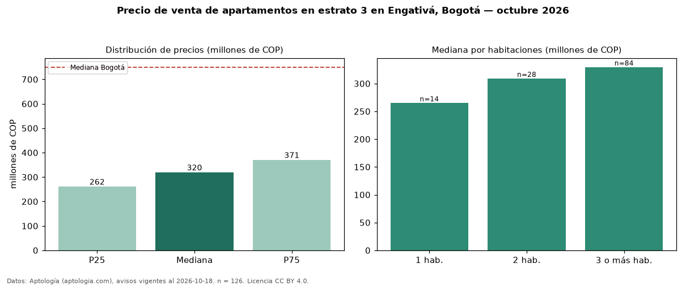

Precio de venta de apartamentos en estrato 3 en Engativá, Bogotá — octubre 2026
COP 320 millones es el precio mediano de apartamentos en estrato 3 en venta en Engativá, Bogotá (n = 126 avisos). Eso es 40 % menos que la mediana de toda la vivienda de estrato 3 de Engativá (COP 530 millones, n = 401); este segmento reúne el 31 % de esos avisos. Por metro cuadrado, la mediana es COP 5,35 millones/m² (n = 124), 22 % por encima del conjunto de referencia (COP 4,39 millones/m²). El área mediana anunciada es 60 m². El segmento con más oferta es el de 3 o más habitaciones (84 avisos, mediana COP 330 millones); pasar de 1 habitación a 3 o más habitaciones cambia la mediana +24 %. La administración mediana declarada es COP 245.700 al mes (n = 93). La mediana de todos los apartamentos en venta de Bogotá es COP 750 millones (−57 % de diferencia). 89 % de los avisos con el dato declara parqueadero. Datos: Aptología (aptologia.com), CC BY 4.0 — https://www.aptologia.com/venta/bogota/engativa. Archivos: PDF, CSV con las cifras y gráfica PNG.

| Avisos únicos | 126 |
|---|---|
| Percentil 25 | COP 261.500.000 |
| Mediana | COP 320.000.000 |
| Percentil 75 | COP 370.750.000 |
| Mediana por m² | COP 5.348.484 |
Fuente: avisos vigentes de portales inmobiliarios recopilados por Aptología, deduplicados (mínimo 30 avisos únicos por celda). Precios pedidos, no cerrados. Fecha: 2026-10-18.